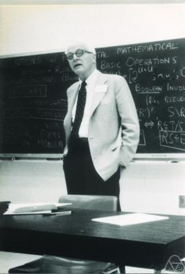

I learned about orthostochastic matrices from Peyman Milanfar. They connect orthogonal matrices with probability couplings and optimal transport.
A permutation matches each source point to exactly one target point. A doubly stochastic matrix allows a softer matching, splitting each point among several destinations. There is a less familiar way to build such matrices: take an orthogonal matrix and square each of its entries. The result is orthostochastic.
This construction automatically enforces positivity and the two marginal constraints of uniform discrete transport. Although it describes only a nonconvex subset of all couplings, it preserves the optimal value of every linear transport objective. The nonconvex parametrization can, however, introduce suboptimal local minima where an orthogonal gradient flow can stop.
Bistochastic and orthostochastic matrices
Write \(\mathbf1=(1,\ldots,1)^\top\). An \(n\times n\) real matrix \(P\) is bistochastic, or doubly stochastic, when
\[ P_{ij}\ge0,\qquad P\mathbf1=\mathbf1,\qquad P^\top\mathbf1=\mathbf1. \]Denote this set by \(\mathcal B_n\). Each row and column is a probability vector. Thus \(P\) describes a Markov transition that preserves the uniform distribution. The set \(\mathcal B_n\) is a compact convex polytope: its constraints are linear, closed, and force \(0\le P_{ij}\le1\).
An orthostochastic matrix has the form
\[ P=Q\odot Q,\qquad Q\in\mathrm O(n),\qquad Q^\top Q=I, \]where \(\odot\) means entrywise multiplication: \(P_{ij}=Q_{ij}^2\), not matrix multiplication \(Q^2\). Write \(\mathcal O_n\) for the resulting set of matrices. Orthogonality provides the normalization: \(\sum_j Q_{ij}^2=\sum_i Q_{ij}^2=1\). Consequently,
\[ \mathcal O_n\subseteq\mathcal B_n. \]Both sets are invariant under transposition and independent row or column permutations. The set \(\mathcal O_n\) is compact, as the continuous image of the compact group \(\mathrm O(n)\). Changing signs of rows or columns of \(Q\) leaves \(P\) unchanged. In particular, one may restrict \(Q\) to \(\mathrm{SO}(n)\), the determinant-one component, without losing any \(P\): if necessary, flip one row.
In the complex analogue, \(P_{ij}=|U_{ij}|^2\) for a unitary \(U\); this is called unistochastic. Real signs and complex phases give different classes. We use the real convention throughout [2].
The Birkhoff–von Neumann theorem

A permutation \(\sigma\) corresponds to \(P^\sigma_{ij}=1\) when \(j=\sigma(i)\), and zero otherwise. Such a matrix is itself orthogonal and orthostochastic. The classical Birkhoff–von Neumann theorem gives a complete convex characterization [1].
Theorem 1 (Birkhoff–von Neumann). Every bistochastic matrix is a convex combination of permutation matrices. Equivalently,
\[ \mathcal B_n=\operatorname{conv}\{P^\sigma:\sigma\in\mathfrak S_n\} =\operatorname{conv}(\mathcal O_n). \]Proof: repeatedly remove a positive matching
Join row \(i\) to column \(j\) whenever \(P_{ij}>0\). For a set \(S\) of rows, its total mass is \(|S|\); its neighboring columns can absorb at most one unit each. Hence its neighbor set \(N(S)\) satisfies \(|N(S)|\ge|S|\). Hall’s marriage theorem therefore supplies a permutation supported entirely on positive entries.
Why the matching criterion holds
Take a maximum matching. If a row is unmatched, follow alternating unmatched/matched edges from it. If an unmatched column is reached, reversing that path increases the matching. Otherwise all reached columns are matched to reached rows other than the starting row. The reached rows \(S\) then have \(|N(S)|=|S|-1\), contradicting the inequality above. Thus every row is matched. \(\square\)
For the resulting \(P^\sigma\), put \(a=\min_iP_{i\sigma(i)}>0\). If \(a=1\), then \(P=P^\sigma\). Otherwise,
\[ P=aP^\sigma+(1-a)\widetilde P,\qquad \widetilde P=\frac{P-aP^\sigma}{1-a}\in\mathcal B_n. \]The remainder has strictly fewer positive entries. Repetition ends after finitely many removals and gives a convex combination. Conversely, convex combinations of permutation matrices are bistochastic. The final equality follows from permutations being orthostochastic and \(\mathcal O_n\subseteq\mathcal B_n\). \(\square\)
For \(n=2\), there is no distinction: every bistochastic matrix is
\[ \begin{pmatrix}a&1-a\\1-a&a\end{pmatrix} =\begin{pmatrix}\sqrt a&-\sqrt{1-a}\\\sqrt{1-a}&\sqrt a\end{pmatrix}^{\!\odot2}, \qquad 0\le a\le1. \]Already at \(n=3\), the inclusion is strict and \(\mathcal O_3\) is not convex. For example,
\[ P=\frac12\begin{pmatrix}0&1&1\\1&0&1\\1&1&0\end{pmatrix} \]is the average of the two cyclic permutation matrices. But the first two rows of any signed entrywise square root overlap in exactly one nonzero coordinate; their inner product can only be \(\pm1/2\), never zero. Thus \(P\notin\mathcal O_3\). A block diagonal copy of this example proves strict inclusion and nonconvexity for every \(n\ge3\).
The signed square-root characterization
Squaring discards the signs of the orthogonal matrix. Recognition therefore requires recovering a consistent choice of signs.
Theorem 2 (signed square-root criterion). A bistochastic \(P\) is orthostochastic if and only if there is a single sign matrix \(S\in\{-1,1\}^{n\times n}\) such that, for every pair of distinct rows,
\[ \sum_{j=1}^n S_{ij}S_{kj}\sqrt{P_{ij}P_{kj}}=0 \qquad(i\ne k). \]Proof: restore the missing signs
Necessity follows by writing \(Q_{ij}=S_{ij}\sqrt{P_{ij}}\); choose arbitrary signs at zero entries. Conversely, this formula constructs rows with norm one, since \(P\) has row sums one. The displayed condition makes them pairwise orthogonal. The square matrix \(Q\) therefore satisfies \(QQ^\top=I\), hence is orthogonal and squares entrywise to \(P\). \(\square\)
This is a finite exact test, not an efficient recognition algorithm: searching all signs quickly becomes expensive. Allowing a different sign assignment for each pair of rows is only a necessary test in general; the signs must work together. Polynomial descriptions in higher dimensions become substantially more intricate [3].
In dimension three the criterion reduces to a condition on three lengths.
Theorem 3 (the three-by-three criterion). For \(P\in\mathcal B_3\), set \(\ell_j=\sqrt{P_{1j}P_{2j}}\). Then \(P\) is orthostochastic if and only if the three lengths form a degenerate triangle:
\[ 2\max(\ell_1,\ell_2,\ell_3)=\ell_1+\ell_2+\ell_3. \]Equivalently, putting \(a=P_{11}P_{21}\), \(b=P_{12}P_{22}\), and \(c=P_{13}P_{23}\), the condition is \((a+b-c)^2=4ab\).
Proof: two rows determine the third
The first two rows of an orthogonal lift require signs with \(\pm\ell_1\pm\ell_2\pm\ell_3=0\). For three nonnegative numbers this is equivalent to one being the sum of the other two, including zero-length cases.
Conversely, use the condition to choose two orthonormal rows \(q_1,q_2\) with the prescribed squared entries. Complete them by \(q_3=q_1\times q_2\). The resulting square matrix is orthogonal, so each column has norm one. Therefore
\[ q_{3j}^2=1-q_{1j}^2-q_{2j}^2 =1-P_{1j}-P_{2j}=P_{3j}. \]It is the required lift. Finally, the polynomial identity says \(c=(\sqrt a\pm\sqrt b)^2\), precisely the same degenerate-triangle condition. \(\square\)
For comparison, complex phases can close any triangle, not just a degenerate one: the three-by-three unistochastic criterion is the ordinary triangle inequality for these lengths [2]. The flat matrix \(P_{ij}=1/3\) is unistochastic but not orthostochastic: three signed terms of magnitude \(1/3\) cannot sum to zero.
Equivalence for uniform discrete optimal transport
Let \(x_1,\ldots,x_n\) and \(y_1,\ldots,y_n\) be two point clouds in \(\mathbb R^d\), and consider the equally weighted measures
\[ \alpha=\frac1n\sum_i\delta_{x_i},\qquad \beta=\frac1n\sum_j\delta_{y_j}. \]A coupling is an array \(\pi_{ij}\ge0\) with every row and column sum equal to \(1/n\). Thus \(P=n\pi\) is bistochastic. For a cost matrix \(C_{ij}=c(x_i,y_j)\), the discrete Kantorovich problem is [4]
\[ \operatorname{OT}_C(\alpha,\beta) =\min_{P\in\mathcal B_n}\frac1n\sum_{i,j}C_{ij}P_{ij}. \]Corollary 1 (same value, fewer feasible couplings). For every real cost matrix,
\[ \min_{P\in\mathcal B_n}\frac{\langle C,P\rangle}{n} =\min_{Q\in\mathrm O(n)}E(Q) =\min_{\sigma\in\mathfrak S_n}\frac1n\sum_i C_{i\sigma(i)}, \qquad E(Q)=\frac1n\sum_{i,j}C_{ij}Q_{ij}^2. \]Proof: a linear objective attains its minimum at a permutation
By Theorem 1, the cost of any bistochastic matrix is an average of permutation costs, and cannot be smaller than their minimum. A minimizing permutation is orthostochastic. The inclusions \(\{P^\sigma\}\subseteq\mathcal O_n\subseteq\mathcal B_n\) now sandwich the three minima. \(\square\)
The feasible sets, and in the presence of ties the sets of minimizers, are not identical. When \(C=0\), every bistochastic matrix is optimal, including matrices with no orthogonal lift. The argument relies on a linear objective and two uniform clouds of the same cardinality; it is not a statement about entropically regularized transport or arbitrary masses. Nor does it make nonconvex optimization easier than the classical assignment problem, which already has efficient algorithms such as the Hungarian method [5].
Projected descent and an orthogonal gradient flow
The benefit of the parametrization is exact feasibility: \(\pi_{ij}=Q_{ij}^2/n\) is automatically a coupling. To optimize it, one must move along the orthogonal group, not normalize rows and hope the columns follow. Orthogonal flows for assignment were studied by Brockett and Wong [6].
Use the normalized Frobenius metric \(\langle U,V\rangle_n=\operatorname{tr}(U^\top V)/n\). This choice only rescales time relative to the ordinary Frobenius metric. The ambient gradient of \(E\) is \(G=2C\odot Q\). Writing \(\operatorname{sym}(A)=(A+A^\top)/2\) and \(\operatorname{skew}(A)=(A-A^\top)/2\), its tangent projection is
\[ \mathcal G(Q)=G-Q\operatorname{sym}(Q^\top G) =Q\operatorname{skew}(Q^\top G). \]Proposition 1 (feasible descent). The flow
\[ \dot Q_t=-\mathcal G(Q_t),\qquad Q_0\in\mathrm O(n), \]remains orthogonal and dissipates its transport energy:
\[ \frac{d}{dt}E(Q_t)=-\frac1n\|\mathcal G(Q_t)\|_{\mathrm F}^2\le0. \]Proof: tangent velocities preserve orthogonality
Differentiating \(Q^\top Q=I\) identifies the tangent vectors as \(Q\Omega\), with \(\Omega^\top=-\Omega\). The orthogonal projection of an ambient matrix \(G\) onto these vectors is \(Q\operatorname{skew}(Q^\top G)\). Thus \(\dot Q=-Q\Omega\) gives \(\frac d{dt}(Q^\top Q)=-\Omega^\top-\Omega=0\). The chain rule and orthogonality of the tangent projection give
\[ \frac d{dt}E(Q)=\langle G,-\mathcal G(Q)\rangle_n =-\langle\mathcal G(Q),\mathcal G(Q)\rangle_n. \]The smooth vector field on the compact orthogonal group has a global forward solution. \(\square\)
A projected-gradient step first moves in the ambient space, then returns to the closest orthogonal matrix:
\[ Q^+=\operatorname{polar}(Q-hG),\qquad \operatorname{polar}(X)=X(X^\top X)^{-1/2}. \]For sufficiently small \(h\), \(X\) is invertible and this is the unique Frobenius-nearest orthogonal matrix. Its first-order expansion is \(Q^+=Q-h\mathcal G(Q)+O(h^2)\), yielding the flow above. This is a standard instance of manifold optimization [8].
The numerical panel instead uses an equivalent first-order, constraint-preserving Cayley retraction, avoiding a matrix square root at every step [7]:
\[ Q^+=Q(I+\tfrac h2\Omega)^{-1}(I-\tfrac h2\Omega), \qquad \Omega=\operatorname{skew}(Q^\top G). \]The Cayley factor is orthogonal because \(\Omega\) is skew-symmetric. An Armijo backtracking test accepts only sufficient energy decrease. Finite steps approximate the continuous flow; they are not its exact solution.
Suboptimal local minima for squared Euclidean costs
Equality of global minima does not imply that a gradient flow reaches them. In fact, every signed permutation is stationary: at such a \(Q\), the matrix \(Q^\top G\) is diagonal. Initializing at the identity would therefore prevent any motion, even if its matching has a large cost.
There are also strict suboptimal local minima, not just unstable stationary points. Here is an explicit planar example.
Proposition 2 (a three-point local minimum). Let \(x_i\) be the vertices of a unit equilateral triangle and let \(y_i=R_\theta x_i\), where \(R_\theta\) is planar rotation and \(\theta=75^\circ\). For \(C_{ij}=\|x_i-y_j\|^2\), the matrix \(Q=I\) is a strict local minimum of \(E\), but it is not globally optimal.
Proof: pairwise swaps are uphill, but a three-cycle is downhill
For a small skew-symmetric \(\Omega\), expansion around the identity gives
\[ E(e^\Omega)-E(I) =\frac13\sum_{i<j}(C_{ij}+C_{ji}-C_{ii}-C_{jj})\Omega_{ij}^2 +O(\|\Omega\|_{\mathrm F}^3). \]For these triangles every coefficient is \(6\cos\theta>0\). The Hessian is therefore positive definite on the tangent space, making \(I\) a strict local minimum. But its cost is \(2-2\cos75^\circ\), whereas the cyclic assignment with relative angle \(75^\circ-120^\circ=-45^\circ\) costs \(2-2\cos45^\circ\), which is strictly smaller. \(\square\)
The example separates two notions that are easy to confuse: a global exact reformulation and a globally convergent algorithm. Orthostochastic transport gives the first, not the second.
Numerical experimentation: coupling and objective evolution
Use the time control to follow one orthogonal descent trajectory. The left panel shows blue source points, rust target points, and the current coupling \(\pi_t=Q_t\odot Q_t/n\). Dashed segments show an exact Kantorovich assignment, computed independently by the Hungarian algorithm. On the right, the solid curve is \(E(Q_t)\); the dashed horizontal line is the certified assignment cost.
Change the number of points in each cloud or move the target cloud to restart the solve. Playback starts paused. The local-minimum preset uses Proposition 2 with an initialization close to, but not exactly at, the identity: its persistent gap is real, not a plotting artifact. The regular cloud preset starts from a dense orthogonal matrix. Line opacity represents coupling mass; very small segments may be omitted from drawing, never from the energy or marginal computations. Time selects saved orthogonal iterates, without linearly blending matrices or couplings. The reported orthogonality residual checks numerical feasibility; the cost gap checks optimality. A small residual does not imply a small gap.
Bibliography
- Diane M. Johnson, A. L. Dulmage, and N. S. Mendelsohn. On an Algorithm of G. Birkhoff Concerning Doubly Stochastic Matrices. Canadian Mathematical Bulletin 3(3), 237–242, 1960. Paper. Birkhoff’s original theorem appeared in Tres observaciones sobre el algebra lineal, Universidad Nacional de Tucumán, Revista A 5, 1946.
- Ingemar Bengtsson, Åsa Ericsson, Marek Kuś, Wojciech Tadej, and Karol Życzkowski. Birkhoff’s polytope and unistochastic matrices, N=3 and N=4. Communications in Mathematical Physics 259, 307–324, 2005. Paper.
- Justin Chen and Papri Dey. The 4 × 4 orthostochastic variety. 2020. Paper.
- Gabriel Peyré and Marco Cuturi. Computational Optimal Transport. Foundations and Trends in Machine Learning 11(5–6), 355–607, 2019. Book.
- Harold W. Kuhn. The Hungarian method for the assignment problem. Naval Research Logistics Quarterly 2(1–2), 83–97, 1955. Paper.
- Roger W. Brockett and Wing Shing Wong. A Gradient Flow for the Assignment Problem. New Trends in Systems Theory, Progress in Systems and Control Theory 7, 170–177, 1991. Chapter.
- Zaiwen Wen and Wotao Yin. A feasible method for optimization with orthogonality constraints. Mathematical Programming 142, 397–434, 2013. Paper · Author manuscript.
- Nicolas Boumal. An Introduction to Optimization on Smooth Manifolds. Cambridge University Press, 2023. Open book.